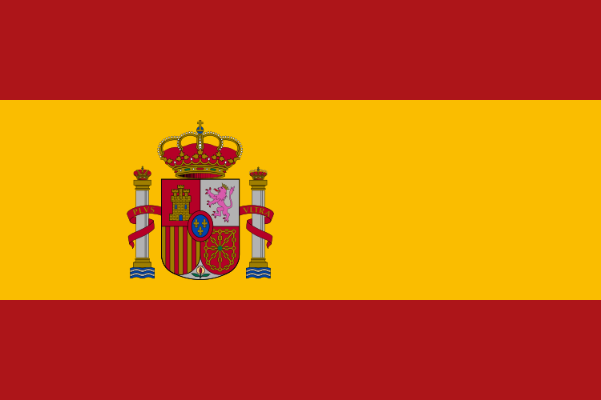
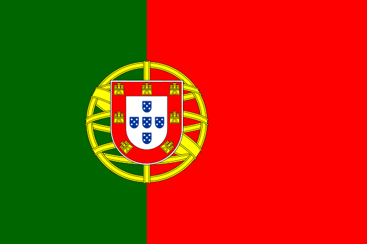

Compare Your Next European Destination
ヨーロッパの国別比較表です。
|
|
|
 Spain |
 Portugal |
|
|
|
|
|
|---|---|---|---|---|---|---|---|---|
| 国旗 | ||||||||
| 国の特徴 | 芸術と美食、地方ごとの風景を楽しむ国 |
古代遺跡と街の暮らしが隣り合う国 |
建築、食、海辺の時間を楽しめる国 |
大西洋の景色と素朴な街歩きが魅力の国 |
歴史ある街と森や川の風景が広がる国 |
アルプスの山岳風景と鉄道旅を楽しむ国 |
遺跡と島々、地中海の食を味わう国 |
運河と自転車のある街を巡る国 |
| 首都 | パリ |
ローマ |
マドリード |
リスボン |
ベルリン |
ベルン |
アテネ |
アムステルダム |
| 人口 | 約6,800万人 |
約5,900万人 |
約4,900万人 |
約1,000万人 |
約8,400万人 |
約900万人 |
約1,000万人 |
約1,800万人 |
| 主な言語 | フランス語 |
イタリア語 |
スペイン語 |
ポルトガル語 |
ドイツ語 |
ドイツ語・フランス語・イタリア語・ロマンシュ語 |
ギリシャ語 |
オランダ語 |
| 通貨 | ユーロ（EUR） |
ユーロ（EUR） |
ユーロ（EUR） |
ユーロ（EUR） |
ユーロ（EUR） |
スイスフラン（CHF） |
ユーロ（EUR） |
ユーロ（EUR） |
| 観光名所 |  |
 |
 |
 |
 |
 |
 |
 |
| 他の観光名所 |
|
|
|
|
|
|
|
|
| 世界遺産 |
|
|
|
|
|
|
|
|
| 名物料理 |  |
 |
 |
 |
 |
 |
 |
 |
| 国内の主な移動手段 | 高速鉄道TGV、都市の地下鉄・路面電車。 |
都市間鉄道、地下鉄、バス。 |
高速鉄道AVE、地下鉄、バス。 |
都市間鉄道、路面電車、地下鉄。 |
鉄道、都市交通、長距離バス。 |
鉄道・バス網、山岳鉄道、ロープウェイ。 |
都市間バス、鉄道、島へのフェリー。 |
鉄道、路面電車、バス、自転車。 |
| こんな人におすすめ | 美術館、街歩き、食をじっくり楽しみたい人。 |
古代遺跡、建築、郷土料理に興味がある人。 |
街の文化と海辺の休暇を両方楽しみたい人。 |
海辺の景色や、ゆったりした街歩きが好きな人。 |
歴史ある街、森、鉄道旅を組み合わせたい人。 |
山や湖の景色、ハイキングを楽しみたい人。 |
遺跡、島巡り、地中海の食を楽しみたい人。 |
運河沿いの街歩きや自転車旅が好きな人。 |